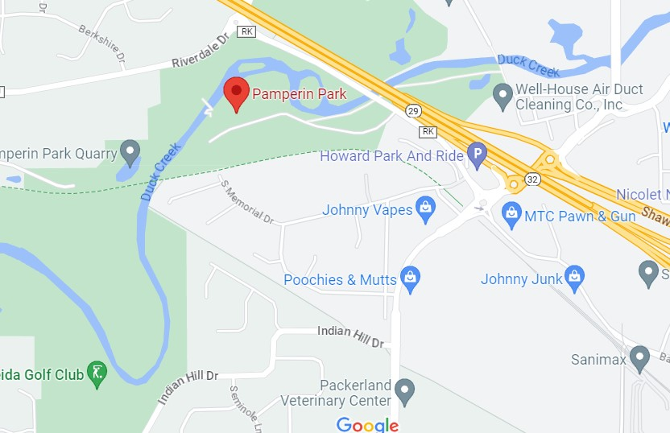

Pamperin Park and Nature Preserve
Welcome to Pamperin Park!

Welcome to Pamperin Park! As displayed in the photographs and information above and below; we cannot wait to tell you all about our park! We have much to offer to all ages and sizes! Need a playground for the kids? It's right there for you. Want to have an outdoor or indoor wedding? All available only at one call! Want to fish for big game? Duck creek flows right through the park out to Green Bay, so there is plenty of fishing to be had here. There is fun for all ages and sizes, so come check out the park, you'll feel as if time has stopped here!
Sights and Activites

A Great Course
Check out the Frisbee Golf course that spans over 1 mile long! With plenty of space and a beautiful trail, you will always be able to have some fun competition among friends and family. Come take a walk through our putting range, and see if the course is challenging enough for you! With 18 holes to cover in the woods going both up and downhill; this surely will give any person looking for great, competitive, and challenging rounds exactly what they're looking for!
Big Fish
Looking for some big fish to catch? Don't you worry we have a diverse range of fish! Whether you want to try for guppies or trophies; there's always something to catch here at the park!
A Scenic Walk
Take a walk on our peaceful trail! Get outside and explore our trails that have plenty of trees, wildlife, and a beautiful bridge that goes over the river that flows through this stunning and out-of-this world nature park. If you're looking for a nice walk, some good exercise, or just some alone time in nature, this is the place to see! It has all your needs. The trails run up and down hills, allowing for some great cardio as well! Fun Fact: if you look southwest off the left side of the bridge; you can see where cars used to drive through the water. So, if you're looking for a nice place to cool off your feet, go for a good swim, fish for crawfish, or looking to go kayaking and/or canoeing; there is the perfect spot for you!
Information and History
-
Menominee Lands, and Invaders
Early 1600s - late 1700s
This land was host to a group of Natives known as the Menominee peoples. The land was discovered in 1634 by the famous French explorer Jean Nicolet. The French had established a fur trading outpost by 1655; as it was near both the Mississippi and Fox river, crucial trade routes during the fur trade. By the early 1700s, the French established the fort Saint Francis. The British had conquered the area and rebuilt the fort in 1761 under their own flag. The British had then abandoned the fort in 1763.
-
Furs and Conquest
Early to Mid 1800s
During the war of 1812, the United States had taken over the territory known as Green Bay, including Duck creek. From these bloody battles, and destruction the natives had suffered greatly. The United States had then continued to settle the area, establishing Fort Howard in 1816 in Green Bay. By the 1820s, the fur trade had started to decline, and thus they needed to have more use for the area.
-
A land of Sawmills and Harvest
1827-1932
Judge John Ardnt had allowed for a sawmill to be built along Duck Creek; near the land that is now Pamperin Park. There was continued sawmills and harvest happening on Menominee land from 1827 onward. The "Americanization" and settlement of the reigon had continued, as Wisconsin was added as a formal state to the United States in 1851. More and more sawmills and lumber harvesting had continued due to Manifest Destiny. It became a hotbed for farming, lumber, and a more dense population. During this time The establishment of Wisconsin as a state had occured in 1851, and the establishment of villages and subdivisons of Green Bay had taken place.
-
Pamperin Park was established
June 23rd, 1932
The 6 acres of land were donated to the Brown County Historical Society, for use as a public park. This was done by the United States military reserves, in a formal meeting. The land was then redeveloped to become a public park for the general masses of the area.
-
Continues to be a sight to see
1932-present
As anyone can tell by the stunning photography and rich history, Pamperin Park continues to thrive as a hotbed for people to gather together, host birthdays, get married, and create memories that last a lifetime for them. This continues on today, as there are projects to expand the park, rennovate the old playground, and preserve this perfect gem in an amazing city for generations to come!.

Location and Map
Address:
- 2801 County Road RK,
- Green Bay, WI
- 54303
Contact Information
- Phone: (920)-448-6242
- Email: parksandrecdept@wi.gov
- Mailing Address: PO Box 23600, Green Bay WI, 54305
Hours of Operation:
- Summer hours: 8AM-Sunset
- Non Summer Hours: 10 AM - Sunset
- Closed: Late November-Early March*